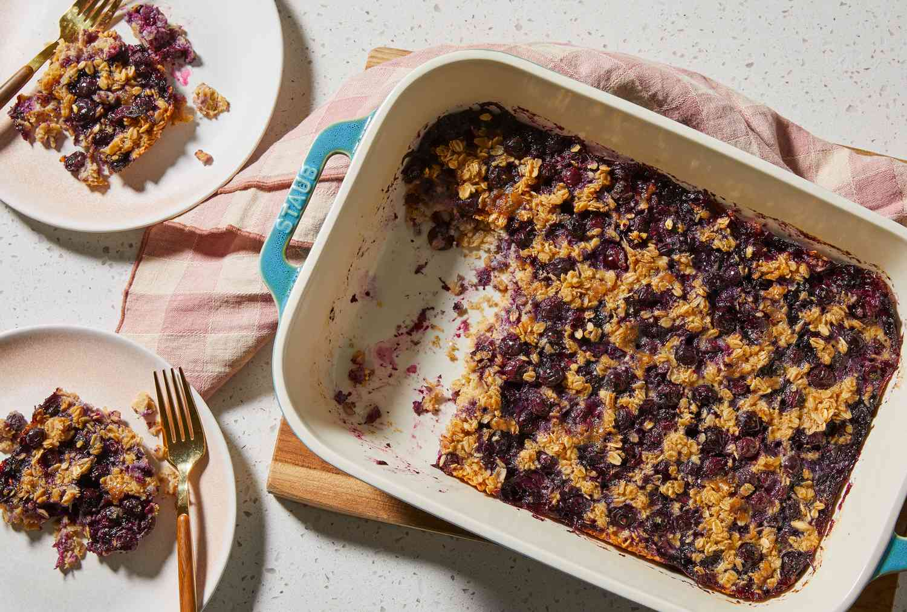
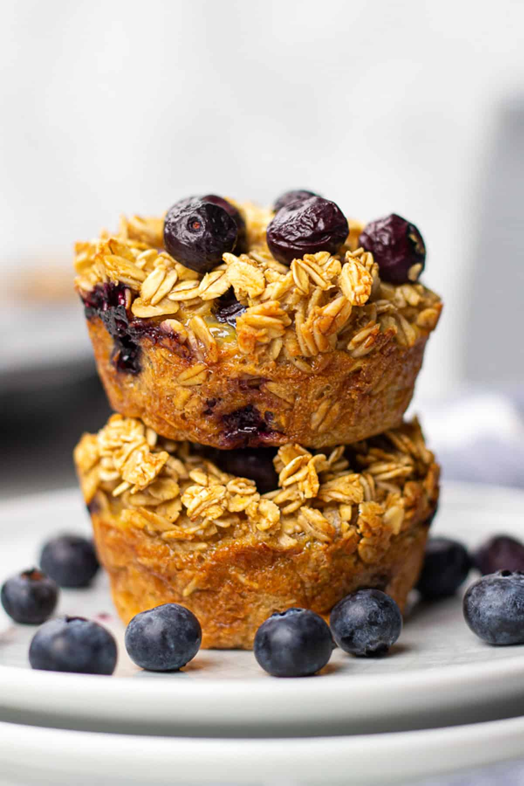
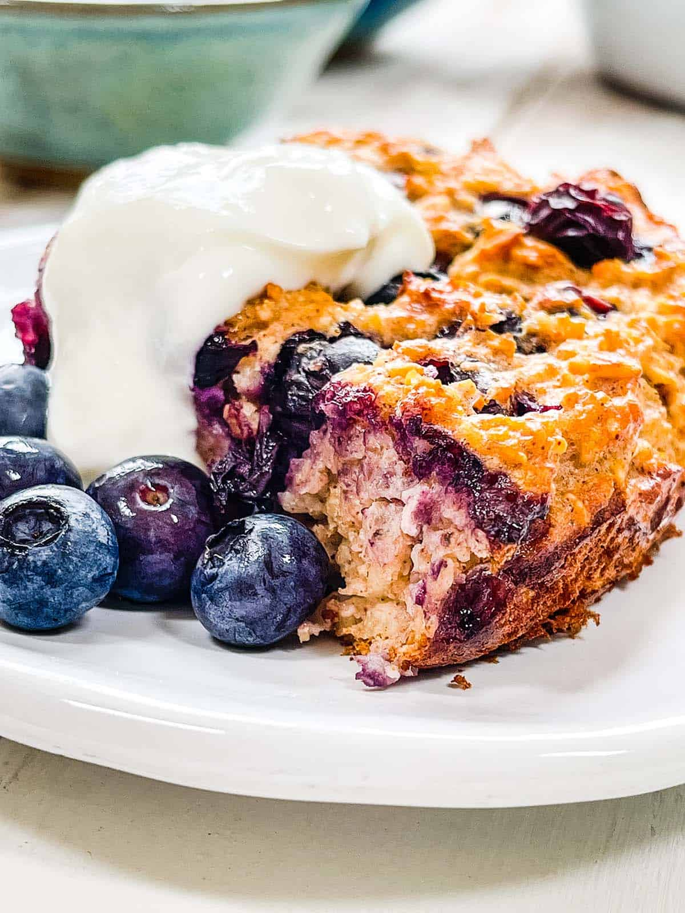
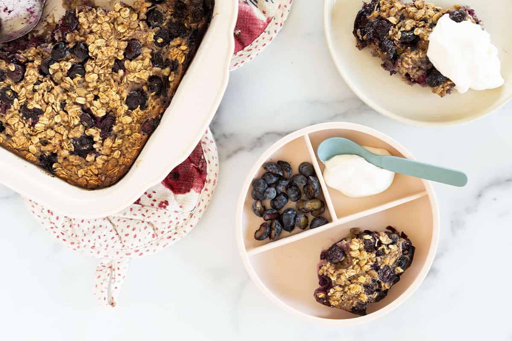
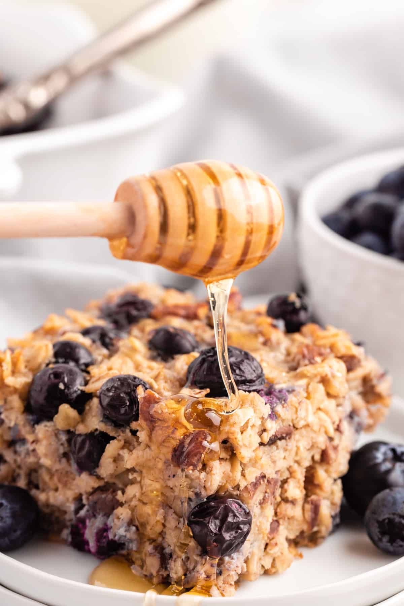
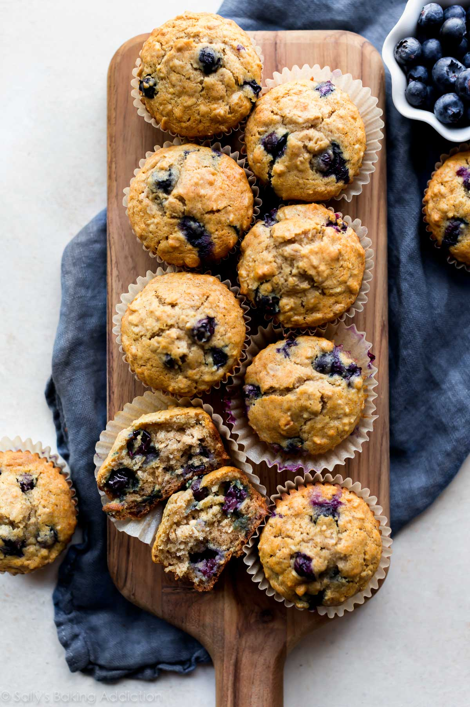

Description
Start your day with a warm and wholesome treat: blueberry baked oats! This comforting recipe combines the natural sweetness of ripe blueberries with the hearty goodness of rolled oats, creating a breakfast that feels indulgent yet nourishing. Ideal for busy mornings, it can be prepped ahead of time and easily reheated, making it a convenient option for meal preppers or anyone looking to simplify their routine. Whether you enjoy it plain or topped with a drizzle of maple syrup or a dollop of yogurt, this dish is a satisfying way to fuel your day.

Ingredients
- 2 cups rolled oats
- 2 tsps cinnamon powder
- 3/4 tsp sea salt
- 2 tsps granulated sugar
- 1 tsp baking powder
- 1 cup semi-skimmed milk
- 2 medium bananas
- 2 large eggs
- 3 tbsps melted butter
- 1/2 cup honey
- 2 tsps vanilla extract
- 1/4 tsp ground nutmeg
- 1 cup blueberries
- 1/2 cup crushed toasted pecans



Steps
- Preheat the oven to 375F / 190C. Once the oven has finished preheating, pour the pecans onto a rimmed baking sheet. Toast for 4 to 5 minutes, until fragrant.
- Blend the rolled oats into oat flour. In a medium mixing bowl, combine the oat flour, blueberries, toasted nuts, cinnamon, baking powder, salt, and nutmeg. Whisk to combine.
- In a smaller mmixing bowl, mash the bananas with a fork until completely smooth. Stir the melted butter into the mashed bananas. Then, combine the milk, honey, egg, butter, and vanilla. Whisk until blended.
- Drizzle the wet ingredients over the dry oat mixture, whisking gently until a consistent texture is achieved. Pour the batter inito your prepared baking dish.


- Scatter any remaining berries across the top of the batter. Sprinkle some raw sugar on top for extra sweetness and crunch (optional).
- Bake for 55 to 60 minutes (if using frozen berries, add an extra 5 minutes), until the top is nice and golden. Remove your baked oats from the oven and let it cool for a few minutes. Drizzle remaining melted butter on the top before serving (optional).
- Serve as-is or with toppings of your choice. This baked oatmeal is fantastic when served warm, but is also good at room temperature or chilled. It keeps well in the refrigerator, covered, for 4 to 5 days. If desired, simply reheat individual portions in the microwave before serving. Enjoy!